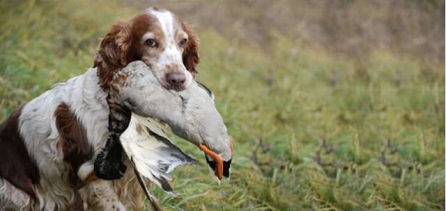
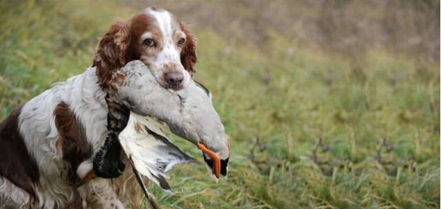

Sportsman's Blog - Outdoor News * Insight * Opinion
2020.11.13 16:00
Sportsman s Blog Disclosure Policy About Sportsman’s Blog Contact Me
This Is What Deer Hunting Is All About
November 8, 2018 Current Outdoor Issues Hunting Outdoor Education No Comments deer hunting , kids , outdoor education , youth hunting , youth hunting trainingActually, this is what all types of hunting should be about. Get. Kids. Into. The. Outdoors! Seriously, youth need to learn how spending time hunting and being outdoors can be a very natural activity in their development. Unfortunately, far too often in today’s world it doesn’t happen that way for many different reasons (or should I say…in some cases, excuses ).
“GIRL POWER” During The Minnesota 2018 Deer Hunting Opener.
Not in our deer camp. Nope. We embrace the notion of exposing kids to the outdoors. And yes, often it’s at the expense of adults being successful bagging a deer…but we don’t care. When you take a kid deer hunting the adult is achieving something much more important.
Indeed, the child is learning how it’s okay to step away from the computer…the iPad…or the smartphone. It’s okay to get off the couch and occasionally experience wet toes or cold fingers for several hours each fall. Moreover, for many kids it’s perfectly fine for them to understand shopping for their food from a hunting blind rather than a grocery store aisle. Kids need wholesome experiences during their maturing years and the deer woods certainly provides that incredible learning opportunity.
This past weekend (and again this coming weekend) we welcomed kids to join us during our organized deer hunt. Six adults were hunting in our woods…and so were 4 kids all under the age of 12 years. Not only that…each of the children shared something else quite special—it was “girl power” time. Yes, it just so happened there were 4 girls the first weekend and possibly there will be 5 tagging along this coming weekend. How cool is that? Seriously, it’s one thing to have the youth out hunting…but it’s even better when you teach young women just how much fun it can be hunting with their dads.
Elsie Taking A Break From The Boredom To Do Some Reading.
Actually, my 10-year old daughter, Elsie, has now been hunting with me since the ripe old age of 4 years old. Last weekend for the opener I think it was safe to say she was even more excited about hunting than her dear Ol’ Pops. I say this because even though we had to rise from bed early for opening morning…she informed me how she had experienced a very sleepless night waking 5 times due to the excitement of what was to soon occur the next morning.
And that’s wonderful. It’s important to harness that excitement from an early age and then find ways to turn it into fond, lasting memories. At this point, Elsie can’t remember spending early Novembers doing anything other than deer hunting. She was too young to remember the days when deer hunting meant staying home with mom waiting for dad to return with stories from the woods. Now, she’s out living the stories and developing the vivid images of what she experiences in her own mind.
Honestly, whether you duck hunt, pheasant hunt, fish, or whatever you do in the outdoors it’s so important to involve your kids. Don’t have a kid…borrow one from a sibling or even a trusting neighbor. It truly is that important to expose all youth to the outdoors at an early age if they’re to develop a life-long appreciation for living a life as a sportsman.
When I look at so many other hunters and fishermen I see their reasons for not taking youth along to be rather selfish. Oh, sure, quiet time in the blind or tree stand is probably not going to happen. You bet…you can count on kids to move or make a noise when it’s least opportune. And, of course, they will cough or sneeze without ever even trying to suppress such bodily actions…but they’re learning.
With Elsie, I’ve discovered that if we’re going to sit in a blind for 5+ hours we need to seek creative ways to fight boredom. I often encourage her to bring a book so she can read. In fact, that book reading was rather challenging last weekend in the rain. Oh, we were in a blind offering some protection…but with windows open there was constantly water spraying as it hit the screen windows. You can bet dad, as well as Elsie, kept a watchful eye on the school library book to make sure nothing was damaged.
Smiles In The Deer Stand Is Always A Good Sign.
But there are other ways to fight boredom. Play guessing games…quietly sing songs by changing the lyrics to use the word “deer” and mention things found in the woods…heck, occasionally we even watch and look for deer or other wildlife movements.
Certainly for me when (or if) the day ever comes to go hunting without my little partner it’ll be a sad day, indeed. We do some of our best bonding while together in the woods sharing various outdoors experiences. Every once in a while I get to teach her something about the outdoors to better help her develop into an outdoors savvy person. Then, every once in a while, she reminds me just how wonderful it still is to view the natural world through young eyes willing to appreciate even the simplest of things nature has to offer.
Share this:
Facebook Twitter Google LinkedIn Pinterest Pocket More Reddit Tumblr Print EmailLike this:
Like Loading...JimB
So, Tomorrow We Deer Hunt
November 2, 2018 Hunting No Comments deer hunting , deer hunting seson , MN Deer Hunting , MN Deer Opener , stages of huntingBest I can figure I’ve been deer hunting now for about 41 or 42 seasons. Been a long time. Seen lots of cool stuff in the woods. And yes, some of it has even included big deer. Yet, many non-hunters and hunters alike will not completely understand when I say this…but I no longer deer hunt with the sole purpose of killing a deer. Let me explain.
When you start out as a hunter you go through various predictable stages in the sport. Actually, I’m not even sure who coined the “5 stages of a hunter” concept anymore, but it goes something like this:
Shooter Stage — as a beginner you want to shoot your new gun. You’re proud of that gun or bow…you want to see how it performs. So much, in fact, that you sort of measure success simply by the fact you got to discharge your firearm or twang your bow. Oh, sure…getting a deer is always the ultimate goal…but when you’re in this beginning stage all you really need to make you happy is to have a chance. You’re more accepting if you shoot and miss…besides, in this hunter’s mind the goal is to just be given an opportunity to use your new “hunting equipment.” Limiting-Out Stage — this stage is sort of the glutton stage. Success comes with shooting a limit of ducks, filling all tags you have with deer…you get the picture. When a hunter is at this stage of life the main point is simply bragging rights that he/she used up all available tags. The hunter got their money’s worth. In other words, they got to leave the woods early because…well, they were ALL DONE hunting because they could not legally hunt any longer. Nothing wrong with this stage or any of them…it’s just a stepping stone toward maturity that many hunters must take. Trophy Stage — typically when a person has hunted for a number of years and achieved some success they aspire toward something greater. They want a bigger buck. They want a duck or a goose with that leg band. In their mind they ascribe to a conceived notion of what they believe to be a trophy and set out to accomplish that sometimes lofty goal. Truthfully, I know many hunters who never mature beyond this stage. And that’s okay. If a large deer with a record book rack is what stokes the hunting desire inside, there’s nothing wrong with that. What is important about this stage is the fact this is the stage where most non-hunters place all hunters …and it is just not so. After all, this is only the middle stage in what I call hunting maturation and appreciation. Method Stage — now let’s be honest, this stage is often intertwined with the previous Trophy Stage for many hunters. Depending on the day or even the hunting season, hunters will take great pride in their strategy to waylay a big buck almost as much as actually accomplishing the task. The Method Stage can be interesting because this is where the hunter really develops a greater understanding of the outdoors. When a hunter lays in bed at night trying to “out think” the big buck the next morning by employing some fool-proof strategy, well, that’s when the hunter knows he has a fever for the hunt. Appreciation Stage — this is the big one. Most hunters when they enter the sport don’t purposefully set out to get to this level. Nope, instead it just happens along the way. When a hunter gets to this stage he/she realizes that just being in the deer woods is all that really matters. This hunter might not see a deer all day, but by golly that was one heck of a sunrise worth getting out of bed for 2-hours earlier. The hunter at this point in their life doesn’t really care if they even shoot their gun. In fact, a hunter truly at this stage wouldn’t even mind if they left the gun back at camp still inside the case. Indeed, not every hunter makes it to this stage in their hunting maturity…but when they do it’s a thing of beauty. Imagine going into the woods knowing that it will be a successful day simply by spending the time outdoors. No pressure. No expectations.And so I prepare today for the 2018 Minnesota Firearms Deer Hunting Opener where once again I will be hunting with my 10-year old daughter, Elsie, hunting by my side tomorrow morning. I’ll be carrying a muzzleloader giving me a one-shot opportunity for success. Elsie, well she will be keeping me company in the blind by watching and learning. She’s developed into a great hunting partner. She has patience, she has a desire to learn about the outdoors, but most of all she simply enjoys the close-knit time spent with her Dad. Yup, it becomes a Daddy/Daughter bonding experience like no other.
We eat snacks. Drink hot-cocoa from our respective thermos containers. We each have assigned duties to keep a watchful eye and ear out for approaching deer from certain areas. We ask each other if either of us are getting cold yet. We sometimes laugh. Occasionally we text mom back home to see if she’s out of bed yet watching TV. BOOM! sound effect Where did that shot just come from. Elsie thinks it’s from her left. I’m kind of thinking it sounded like it came from my right. It seems like in the deer woods there is something happening to keep your mind engaged at all times. It’s great!
Oh, sure…there are times I sit there and think how nice it would be to be home back in bed all warm and comfortable. Nobody said deer hunting is easy. Nobody ever said deer hunting is exciting at all times. Yet, the time spent in the deer woods does something special to my soul. The best way I can relate it to a non-hunter is to describe how a person plugs their smart phone into a charger to bring it “back to life.” No doubt about it hunting deer is my method to recharge the batteries. Being outdoors…being close to nature…it truly does something special to the human spirit that is hard to describe. Moreover, when you share that experience with someone you love it takes on an even deeper meaning.
So, yes…tomorrow I deer hunt. I really don’t care if I end up shooting my gun. I absolutely have no interest in filling all the tags we have. If a trophy comes by it will be a “game time decision” on whether I shoot…because if it’s heading in the general direction of a younger hunter on stand…I will gladly give them the opportunity to make their day. In terms of methods, heck…Elsie and I are in the woods to have a good time and stay comfortable in the blind. We might even crank up the stinky old propane heater just to make things more pleasant by keeping our toes and fingers toasty.
Along with the fun comes the appreciation for the outdoors I’m trying to develop in my daughter. The moments we share together doing so will never be taken away from either of us. Deer hunting is the excuse we use to be outdoors in the woods together. How a person hunts goes a long way to determine what sort of memories are created and whether they are positive or negative. A proper attitude and a plan will ensure the deer woods experience always stays special in a deer hunter’s heart.
Share this:
Facebook Twitter Google LinkedIn Pinterest Pocket More Reddit Tumblr Print EmailLike this:
Like Loading...JimB
This Video Camera Looks A Bit Fishy
October 30, 2018 Current Outdoor Issues Fishing Gear No Comments fishing , fishing equipment , Fishing Gear , technologyOkay, I get it. Technology continues to invade almost every space of our lives…including those endeavors once meant to be relaxing and contemplative. Yet, this fishing lure I seen advertised the other day really takes the cake…errr, I mean video.
Yup, imagine trolling or casting with a $240 fishing lure hoping to catch the big lunker, but wait…when you do you’ll have a video for social media worthy to go viral. That’s right, the latest new fishing gadget is a video camera offering 720p video quality built directly into the fishing lure. Theoretically you will be able to see the fish bearing down on the lure until the moment of truth when the world goes dark with a fish on hook. What could possibly be more exciting than having that happen?
But wait. What if you’re like me being more apt to snag the lure on a submerged log or rock and subsequently lose it. Have you ever seen a grown man cry while fishing? If I lost a fishing lure that expensive I would be inclined to jump into the lake and dive for it…and to make matters worse I DON’T EVEN SWIM!
Truthfully, I would love to see some video samples from this new fishing lure. In a world where most cameras promote image stabilization how could a fishing lure that wobbles and zigs/zags through the water to entice a fish to strike produce any sort of video quality that would not incite at least some level of nausea from the viewer? Alas, maybe I’m looking at this all wrong.
Indeed, maybe the real value in using this camera is for the fisherman to do a self-critique of his/her fishing style. Maybe the video will show how the angler is too quick to set the hook. Maybe the video will show some fault in the quickness of the retrieve. Who knows. What I do wonder is how many of these lure cameras will show up in the tackle box of legitimate anglers. After all, it’s no secret how more fishing lures actually catch shoppers in the store rather than ever catch fish while used on the Lake.
In the end, who am I to say if a person wants to dump several hundy into a single fishing lure they shouldn’t be able to do that. We all spend our time in the outdoors having fun in what ever manner is necessary to achieve satisfaction. So, if you feel inclined to purchase the Eco-Net Eco-Popper Video Fishing Lure you can find it HERE . As for me, nope…such a product will likely never find its way into my boat. Somehow, I happen to think the biggest fish this lure will ever catch is the sucker who opens his/her billfold/purse to purchase it.
Share this:
Facebook Twitter Google LinkedIn Pinterest Pocket More Reddit Tumblr Print EmailLike this:
Like Loading...JimB
1 2 3 › Next PageJim Braaten
jim@sportsmansblog.com
Sportsman's Blog™ is a registered Trademark of James Braaten. All rights reserved. No duplication allowed. November 2020 S M T W T F S Nov 1 2 3 4 5 6 7 8 9 10 11 12 13 14 15 16 17 18 19 20 21 22 23 24 25 26 27 28 29 30Subscribe to Blog via Email
Visit Me On Facebook
Archives
Archives Select Month November 2018 October 2018 July 2018 October 2017 September 2017 May 2017 January 2017 September 2016 August 2016 July 2016 May 2016 April 2016 March 2016 October 2015 September 2015 August 2015 July 2015 June 2015 April 2015 March 2015 February 2015 January 2015 December 2014 October 2014 September 2014 August 2014 June 2014 April 2014 March 2014 February 2014 January 2014 December 2013 November 2013 October 2013 September 2013 August 2013 July 2013 June 2013 May 2013 April 2013 March 2013 February 2013 January 2013 December 2012 November 2012 September 2012 August 2012 June 2012 May 2012 March 2012 February 2012 January 2012 December 2011 November 2011 October 2011 September 2011 August 2011 July 2011 June 2011 May 2011 April 2011 March 2011 February 2011 January 2011 December 2010 November 2010 October 2010 September 2010 August 2010 July 2010 June 2010 May 2010 April 2010 March 2010 February 2010 January 2010 December 2009 November 2009 October 2009 September 2009 August 2009 July 2009 June 2009 May 2009 April 2009 March 2009 February 2009 January 2009 December 2008 November 2008 October 2008 September 2008 August 2008 July 2008 June 2008 May 2008 April 2008 March 2008 February 2008 January 2008 December 2007 October 2007 September 2007 August 2007 July 2007 June 2007 May 2007 April 2007 March 2007 February 2007 January 2007 December 2006 November 2006 October 2006 September 2006 August 2006 July 2006 June 2006 May 2006 April 2006 March 2006 February 2006 January 2006 December 2005 October 2005 September 2005 August 2005 July 2005 June 2005 May 2005 April 2005 March 2005 February 2005 January 2005 December 2004 November 2004 October 2004 September 2004Categories
Recent Tweets
Tweets by @jim7226Memberships
Paid Sponsors
Tags
2014 SHOT 2014 shot show 2015 shot show blog Blogging Cheney Content Marketing deer camp deer hunter deer hunting deer hunting season Firearms Safety fishing Fishing Gear food governor tim pawlenty gun control Herters hunter hunting Hunting Accident hunting equipment hunting gear kids minnesota minnesota dnr Minnesota Governor s Deer Opener Minnesota Governor s Pheasant Opener Minnesota youth waterfowl hunt MN Deer Hunting nature nssf outdoors shooting hunting and outdoor trade show shooting hunting outdoor trade shooting hunting outdoor trade show shot SHOT Show Shot trade show the SHOT the SHOT Show Trade show trapping youth hunting youth hunting trainingRSS Links
RSS - Posts
RSS - Comments
Copyright © 2020 · James Braaten · www.JimBraaten.com · All Rights Reserved, No Duplication Allowed Without Expressed Written Permission. %d bloggers like this:- Sportsman's Box - Home of the Hunters and Anglers ...
- Spillway Sportsman Blog
- Blog - Panteao Sportsman's Club
- Sportsman Open 212 | FishTalk Magazine
- Sportsman 267 OE: Prototyping Perfection | FishTalk Magazine
- Blog - Kodiak Sportsman's Lodge
- The Sportsman | Sports Stories That Matter
- Small Water Sportsman Blog — Small Water Sportsman
- Blog – Jackson County Sportsman Club
- The Official Sportsman Blog | Sportsman Boats
- Sportsman's Box - Home of the Hunters and Anglers ...
The Official Sportsman Blog. Sportsman Boats Debuts Latest Flagship. Posted December 12, 2019. News. Sportsman Boats unveils the company’s all-new Open 352 Center Console at the 8th Annual Dealer Sales Training Event. Top 5 Reasons To Boat In The Fall. Posted ...
- Spillway Sportsman Blog
Exeter, England, United Kingdom About Blog The Sportsman Gun Centre is the UK's largest shooting mail order and internet company, supplying to both the trade and retail markets. Subscribe to keep up with latest updates from this blog.
- Blog - Panteao Sportsman's Club
Bringing relevant and update information including tips, tricks and gear for you to enjoy!
- Sportsman Open 212 | FishTalk Magazine
When all was said and done and our test of the Sportsman 267 OE was complete, there was one thing which drove home our point that this prototype is not, in fact, the perfect boat. The Sportsman rep loaded the boat on a trailer, waved good-bye, and towed it back to South Carolina. Darn. Sportsman 267 OE Specifications: LOA – 26’7” Beam ...
- Sportsman 267 OE: Prototyping Perfection | FishTalk Magazine
Blog Pistol practice with friends and family. by jcsportsmansclub March 5, 2019 March 3, 2019. On a day when the guys are just practicing, its a good day to bring friends or family members. ... 2020 Jackson County Sportsman Club ...
- Blog - Kodiak Sportsman's Lodge
Sportsman Flyer LLC will be building just 20 of these frames for 2012, of which a handful will be full race models. Posted by NEWS at 9:10 PM 0 comments. Email This BlogThis! Share to Twitter Share to Facebook Share to Pinterest. Monday, September 5, 2011. Monark Style Forks.
- The Sportsman | Sports Stories That Matter
If you’re planning on hunting doves on a Louisiana wildlife management area, don’t bring along any lead shot this year. According to the Louisiana Department of Wildlife and Fisheries, only No. 6 non-toxic shot and smaller will be allowed for dove hunting during the 2017-18 season.
- Small Water Sportsman Blog — Small Water Sportsman
Panteao Sportsman’s Club Christmas Sale! Join the Panteao Sportsman’s Club and save 20% off our annual individual or family membership! Simply use code “XMAS20” during checkout on our website or stop in the office at the range.
- Blog – Jackson County Sportsman Club
Kodiak Sportsman’s Lodge is located in Old Harbor, Alaska, nestled behind Sitkalidak Island. We own four of the six sports fishing boats that operate in this 30-mile stretch of protected waters, making it …
- The Official Sportsman Blog | Sportsman Boats
The Official Sportsman Blog Best Fly Rod and Reel Combos for Freshwater Fishing May 20, 2020. Fishing 101. Fishing. Choosing the best fly fishing combo is a very important part of starting your career as a fly fishermen. We are going to dive into what to look for in a fly rod and reel package and what some of the best options are for your style ...
The Official Sportsman Blog. Sportsman Boats Debuts Latest Flagship. Posted December 12, 2019. News. Sportsman Boats unveils the company’s all-new Open 352 Center Console at the 8th Annual Dealer Sales Training Event. Top 5 Reasons To Boat In The Fall. Posted ...
Exeter, England, United Kingdom About Blog The Sportsman Gun Centre is the UK's largest shooting mail order and internet company, supplying to both the trade and retail markets. Subscribe to keep up with latest updates from this blog.
Bringing relevant and update information including tips, tricks and gear for you to enjoy!
When all was said and done and our test of the Sportsman 267 OE was complete, there was one thing which drove home our point that this prototype is not, in fact, the perfect boat. The Sportsman rep loaded the boat on a trailer, waved good-bye, and towed it back to South Carolina. Darn. Sportsman 267 OE Specifications: LOA – 26’7” Beam ...
Blog Pistol practice with friends and family. by jcsportsmansclub March 5, 2019 March 3, 2019. On a day when the guys are just practicing, its a good day to bring friends or family members. ... 2020 Jackson County Sportsman Club ...
Sportsman Flyer LLC will be building just 20 of these frames for 2012, of which a handful will be full race models. Posted by NEWS at 9:10 PM 0 comments. Email This BlogThis! Share to Twitter Share to Facebook Share to Pinterest. Monday, September 5, 2011. Monark Style Forks.
If you’re planning on hunting doves on a Louisiana wildlife management area, don’t bring along any lead shot this year. According to the Louisiana Department of Wildlife and Fisheries, only No. 6 non-toxic shot and smaller will be allowed for dove hunting during the 2017-18 season.
Panteao Sportsman’s Club Christmas Sale! Join the Panteao Sportsman’s Club and save 20% off our annual individual or family membership! Simply use code “XMAS20” during checkout on our website or stop in the office at the range.
Kodiak Sportsman’s Lodge is located in Old Harbor, Alaska, nestled behind Sitkalidak Island. We own four of the six sports fishing boats that operate in this 30-mile stretch of protected waters, making it …
The Official Sportsman Blog Best Fly Rod and Reel Combos for Freshwater Fishing May 20, 2020. Fishing 101. Fishing. Choosing the best fly fishing combo is a very important part of starting your career as a fly fishermen. We are going to dive into what to look for in a fly rod and reel package and what some of the best options are for your style ...
 
